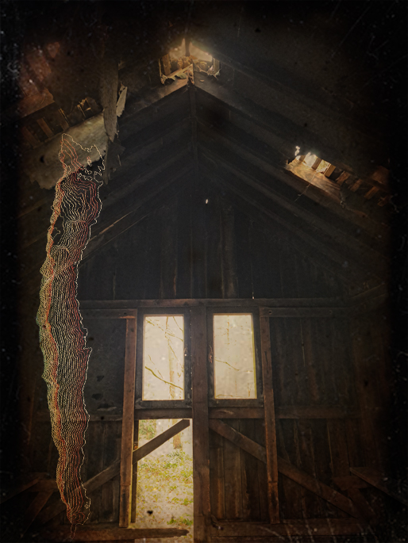

The Finnant

My small hut sits solemnly nestled on the outskirts of town - as close as some would dare come to the hills. I can hear the hills inhabitants wails at night, or I used to anyway.
I was gifted the cottage by old Vortigern. My predecessor. I have taken up his work documenting these mysterious creatures.
I still remember how he'd bring me frozen chunks of meat and vegetables to make stew! I didn't even know what I was supposed to do with it!!! So long ago. I can cook all sorts of stew now.